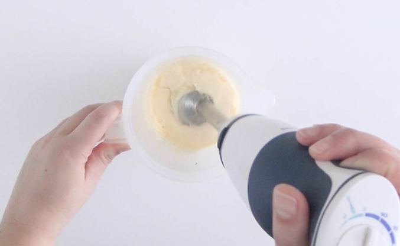
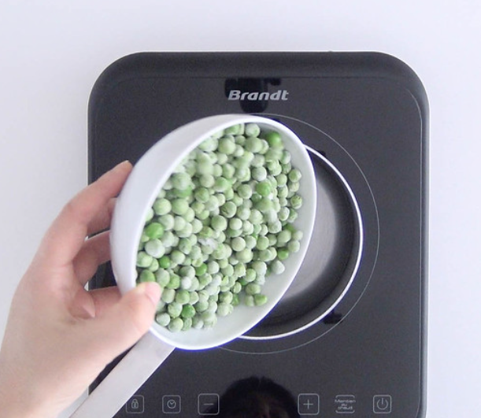
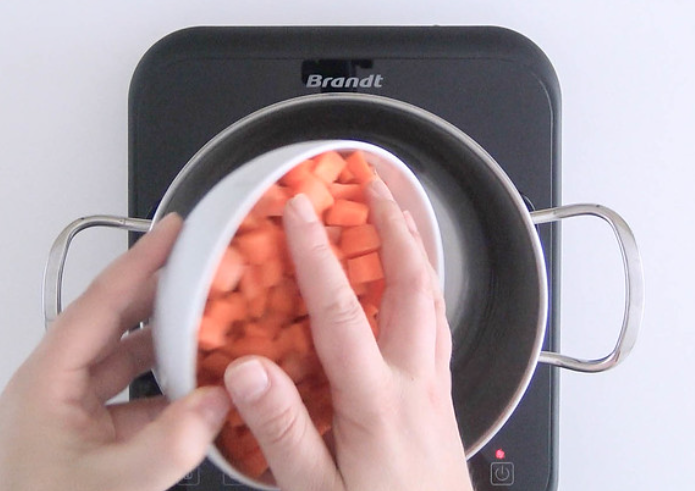
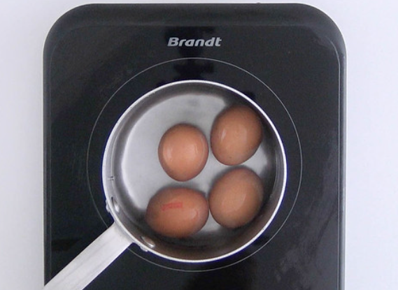
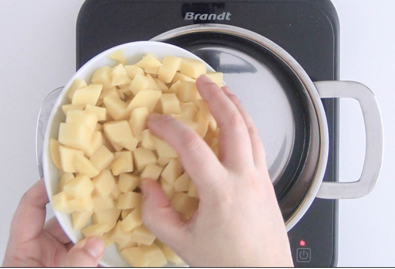
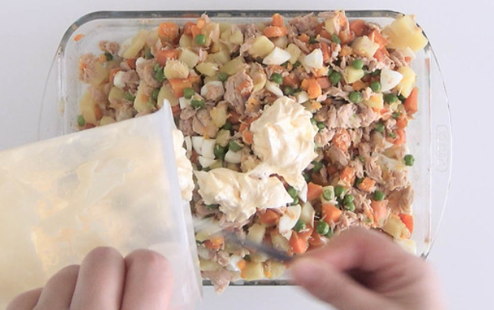

Paso a paso
-
Para hacer una buena macedonia de frutas lo primero que hacemos es lavar bien las frutas. A algunas no es necesario pelarlas, otras las pelaremos antes de trocear. Ponemos en el bol las frutas que tenemos ya preparadas con antelación. Las bolas de sandía (que las hemos hecho con un sacabolas), el melón troceado y los arándanos.
- COCEMOS LOS GUISANTES Cocemos los guisantes en agua ligeramente salada durante 10 minutos. Escurrimos y reservamos.
- COCEMOS ZANAHORIAS Cocemos las zanahorias cortadas en daditos, en agua ligeramente salada durante 10-15 minutos. Cuando veamos que están tiernas, las escurrimos y reservamos.
- COCEMOS LOS HUEVOS Cocemos los huevos durante 7-8 minutos. Los enfriamos bajo grifo con agua fría y dejamos que se templen antes de pelarlos y reservalos.
- COCER PATATAS Pelamos las patatas y las cortamos en dados. Cocemos las patatas en agua salada durante 12-15 minutos. Cuando veamos que están tiernas las escurrimos y reservamos. Debemos estar pendientes de la cocción para evitar que se nos pasen.
- PREPARACIÓN En un bol añadimos las zanahorias, los guisantes y las patatas cocidas. Mezclamos con cuidado para no romper las verduras. Desmenuzamos el atún y lo añadimos. Troceamos los huevos cocidos y los incorporamos también. Sólo nos queda incorporar la mayonesa a la mezcla. Guardamos la ensaladilla en el frigo hasta el momento de servirla.







RESULTADO FINAL